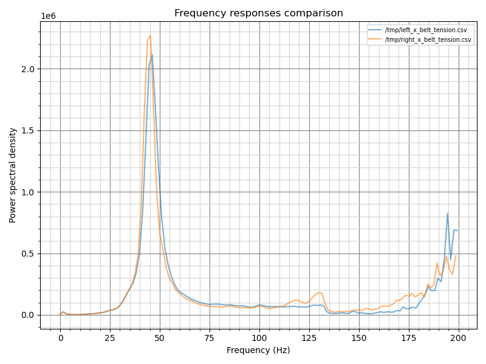
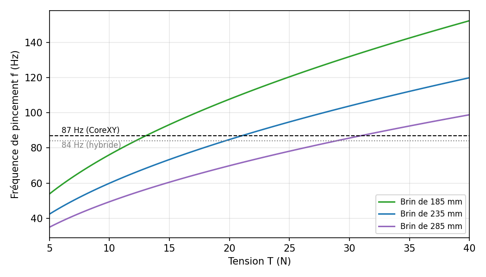
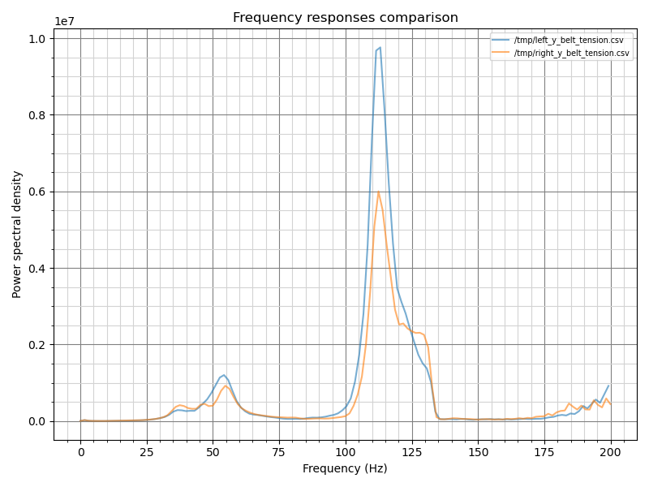

Tensiomètre de courroie · étalonné et validé
La tension de tes courroies, en newtons, avec un Belter.
Le Belter de BigTreeTech affiche un enfoncement en millimètres. Ce projet le transforme en instrument de mesure : ressort étalonné sur 120 lectures, géométrie mesurée, modèle physique vérifié par masses suspendues. Résultat : la tension d'une courroie GT2 à ±6 %, et le nombre de tours à donner au tendeur.
T = (0,406 + 0,1226·A) · 59,75 / (4 · (7,24 − A)). Tige horizontale, embout en place.
Le modèle
Trois points d'appui, un ressort étalonné, zéro paramètre ajusté.
Le Belter pose deux appuis sur le dos de la courroie et pousse une tige au milieu du brin. La tension équilibre la force de la tige. Tout se déduit de grandeurs mesurées.
- Étalonner le ressortDeux campagnes de masses suspendues : k = 0,1235 N/mm à ±1,1 %, précharge 42 g, frottement 0,3 g.
- Mesurer la géométrieEntraxe des vis 59,75 mm, lecture de référence 5,84 mm sur la pièce de calibration, épaisseur de courroie 1,40 mm.
- Valider sur une vraie courroieBrin GT2 chargé par 6 masses connues : le modèle retrouve chaque tension à ±6 %.


Validation
Contrôlé par masses suspendues, pas par une autre formule.
Un brin de 48 cm pend verticalement avec une masse connue : sa tension vaut exactement m·g. On compare la lecture convertie par le modèle et par la formule empirique fournie par BIQU.

| Masse | T réelle | Lecture | Modèle | BIQU |
|---|---|---|---|---|
| 648 g | 6,36 N | 4,97 mm | +5 % | +35 % |
| 939 g | 9,21 N | 5,42 mm | −5 % | +22 % |
| 1790 g | 17,56 N | 6,19 mm | −6 % | +26 % |
| 2071 g | 20,32 N | 6,35 mm | −3 % | +33 % |
| 2585 g | 25,36 N | 6,53 mm | 0 % | +40 % |
| 2916 g | 28,61 N | 6,63 mm | +5 % | +52 % |
Le calculateur
De la lecture au quart de tour.
Une page web autonome, sans installation, qui fonctionne aussi sur téléphone à côté de la machine. Les réglages sont préremplis avec l'étalonnage et mémorisés dans le navigateur.
Ouvrir le calculateur →- Tension en directN, kgf et lbf, avec la zone de validité et la sensibilité par 0,01 mm.
- Conseil de réglageSens et nombre de tours de la vis du tendeur pour atteindre 87 Hz (CoreXY) ou 84 Hz (hybride).
- Rat Rig V-Core 4.1Mono-tête ou IDEX, tailles 300 à 500, courroies upper, lower et Y hybrides.
- Comparer deux courroiesÉcart gauche/droite en pourcentage et conseil pour chacune.
- Étalonner le quart de tourDeux lectures avant/après suffisent pour mesurer l'effet réel sur ta machine.
- Autres courroiesGT2 6, 10, 12 mm ou paramètres libres (épaisseur, masse linéique).
Belter ou macro de résonance ?
Deux mesures qui ne répondent pas à la même question.
Sur une Rat Rig V-Core 4.1 sous RatOS, la macro MEASURE_COREXY_BELT_TENSION fait osciller la tête sur ses courroies. Le second rapport compare les deux approches, en mono-tête et en IDEX.
Belter
« Chaque courroie est-elle à la bonne tension ? »
- Résultat absolu, en newtons, comparable d'une machine à l'autre
- Quelques secondes par brin, sans électronique
- Ne voit pas la dynamique de la machine
Macro de résonance
« La machine se comporte-t-elle de façon symétrique ? »
- Voit tout le système : tension, équerrage, jeu, frottements
- Résultat relatif : compare deux côtés entre eux
- Peu sensible au niveau de tension lui-même




Documentation
Toute la démarche, mesures comprises.
Les deux rapports techniques sont lisibles directement ici, avec leurs figures, leurs tableaux de mesures et leurs calculs d'incertitude.

Caractérisation du ressort du Belter
Bilan des forces, deux campagnes d'étalonnage, modèle théorique du ressort, contrainte dans le fil, puis application à la tension de courroie et validation.

Belter et macro de résonance
Chemin des courroies, lien tension-fréquence, lecture des courbes de la macro en mono-tête et en IDEX, procédures de réglage recommandées.
Limites et suite
Ce qui reste à faire.
Le modèle est validé pour une courroie GT2 9 mm de 1,40 mm d'épaisseur, embout en place et tige horizontale. Pistes ouvertes :
- Refaire une série de 6 masses un autre jour pour confirmer la reproductibilité.
- Mesurer les longueurs de brin des V-Core 4.1 IDEX dans la position de réglage Rat Rig.
- Vérifier la masse linéique (0,0126 kg/m) en pesant au moins 1 m de courroie.
- Valider d'autres courroies : épaisseur mesurée et au moins deux points avec masses.
- Clore la question de la précharge du ressort (force de décollage à la balance).
- Quantifier l'effet de la tension sur la fréquence mesurée par la macro.